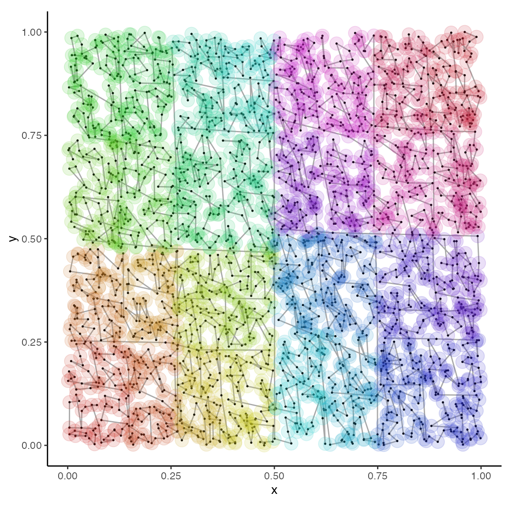
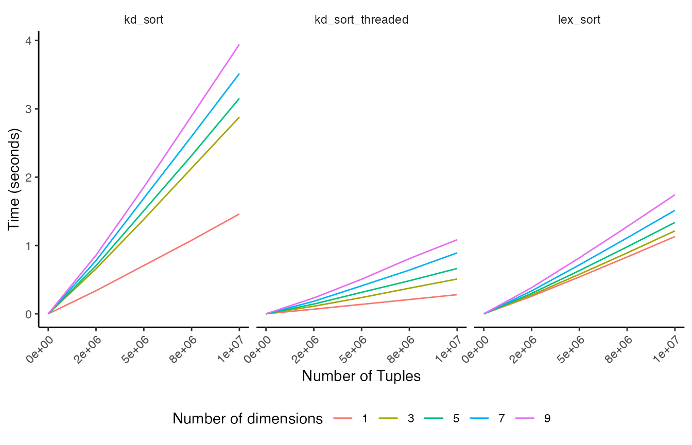

Compact multidimensional sorting and searching with kdtools
Timothy H. Keitt
2019-08-03
Source:vignettes/methods.Rmd
methods.RmdIntroduction
Sorting and searching are fundamental operations in computer and data science. The objective of the kdtools is to expose a C++ header file implementing efficient sorting and searching methods for multidimensional tuple-like data. The interface mirrors that of the C++ Standard Template Library (STL) sorting and searching functions. It is a single header-only library with no external dependencies other than std.
A common approach to improving search performance is to place data into an ordered tree structure, the most common being a binary tree and its variants. Computer textbooks and introductory courses are littered with examples of tree structures, however it has been pointed out by practitioners that many tree-type data structures have considerable storage overhead and poor memory locality. This results from using linked-list-like pointers to connect nodes. In many cases, a fully or partially sorted sequence combined with binary search will outperform pointer-based trees. Indeed, the STL contains a set of algorithms for sorting or partitioning a data sequence and searching within partitioned sequences.
A limitation of the STL algorithms and data structures is that they can only be ordered in a single dimension. Sort keys can possess higher cardinality however comparison operators and ordering are unidimensional. This is suboptimal for data that are intrinsically multidimensional, such as geographical coordinates or other multivariate data. In multiple dimensions, it is preferred to order a sequence of keys such the average distance between neighboring pairs in the sequence is small. There exist a vast array of techniques to accomplish sequence localization; however I will only discuss one known as the kd-tree.
A kd-tree is a type of binary tree that cycles among the dimensions of its stored objects at each level of the tree hierarchy. In the case of spatial data, the root node will contain the median key in the x-direction and each of its daughter nodes will contain the median in the y-direction of their respective partitions. Subsequent daughter nodes will again contain medians in the x-direction, and so on until there are no additional keys to the left or right. Searching a kd-tree involves recursive comparisons, cycling among the dimensions, until a leaf-node is encountered. Most searching operations can be accomplished in logarithmic time complexity yielding an efficient method.
Precisely as an ordinary binary tree can be replaced by a sorted range, a sequence of multidimensional elements can be sorted, in-place if desired, via recursive partitioning following the kd-tree scheme. Divide-and-conquer recursive partitioning is a well-known sorting algorithm and is the basis of the quicksort algorithm. Partitioning a sequence places all elements less than (or more generally meeting some predicate) to the left of a selected key, while all elements greater-than-or-equal-to follow to the right. The kd-sort algorithm presented here simply modifies quicksort to cycle among the dimensions of the stored elements. Searching follows exactly as the kd-tree except that nodes correspond to pivot-elements in the linear array.
Implementation of kd_sort enables a set of additional algorithms for searching and nearest neighbor queries. The following table gives the exposed functions and corresponding STL routines.
| Function templates | STL analog | Outcome |
|---|---|---|
| kd_sort | sort | sorts range |
| kd_is_sorted | is_sorted | returns true if sorted |
| kd_lower_bound | lower_bound | finds first element not less than key for all dimensions |
| kd_upper_bound | upper_bound | finds first element greater than key for all dimensions |
| kd_binary_search | binary_search | returns true if key exists in range |
| kd_equal_range | equal_range | returns an iterator pair spanning all occurrences of a key |
| kd_range_query | lower_bound, upper_bound | finds all elements not less than lower and less than upper |
| kd_nearest_neighbor | finds nearest neighbor of key | |
| kd_nearest_neighbors, kd_nn_indices | finds k-nearest neighbors of key | |
| lex_sort | ordinary STL sort using kd_less for comparison |
Sorting
The kd-sort algorithm in the kdtools package is implemented as a C++ function template parameterized by the starting dimension (usually 0) and the iterator type, which will be auto-deduced by the compiler.
template <size_t I, typename Iter>
void kd_sort(Iter first, Iter last)
{
using TupleType = iter_value_t<Iter>;
constexpr auto J = next_dim<I, TupleType>::value;
if (distance(first, last) > 1)
{
auto pred = kd_less<I>();
auto pivot = median_part(first, last, pred);
kd_sort<J>(next(pivot), last);
kd_sort<J>(first, pivot);
}
}The median_part function is a thin wrapper around the nth_element function from the standard library, which is used to find the median value in the current dimension. Once the median is identified, it is passed to the standard library partition function, which places all values less than the median to the left of the pivot element and all greater-than or equal-to to the right.
Once the first dimension is partitioned, the ranges right and left of the pivot are partitioned, and so on until first and last span a single or no value. The dimension index I is incremented at compile-time using template metaprogramming. The value member of the templated struct next_dim holds the incremented value of I that has been wrapped to cycle through successive dimensions of TupleType. The result of kd_sort is a sequence ordered as if it were inserted into a kd-tree data structure. The following figure illustrates the resulting order in 2-dimensions.

Here the sequence order is shown with a continuous color gradient. The resulting patchiness indicates a hierarchical tree-like partitioning of the space providing the desired locality. Placing nearby points in proximity is what allows for efficient searches once the data are sorted. Sort times for vectors of tuple-like objects are relatively efficient, taking roughly twice the time of an ordinary lexicographical sort.

In the above results, lex_sort is the STL built-in std::sort algorithm using kd_less as the predicate. The results indicate that kd_sort is reasonably fast, requiring roughly twice the time as the STL built-in sorting algorithm. Because of the divide-and-conquer nature of kd_sort, it is trivially parallelizable. The threaded version is equal to or faster than the regular sort. Performance comparable to the build-in STL sort function indicates that this reference implementation is reasonable. The computational complexity appears to scale linearly in the number of tuples in all cases.
Multidimensional comparisons
To ensure the correct behavior in the presence of multiple ties, or even when all keys in one dimension are equal, the kd_less predicate implements circular lexicographic comparison. If elements in one dimension are tied, the next dimension is interrogated to break the tie. The comparisons cycle from trailing dimensions to leading dimensions using modulo arithmetic. It is implemented as a recursive, templated function object with the dimension index incremented at compile-time. SFINAE is used to stop the compile-time iteration after tuple_size<TupleType>::value steps. The could be simplified using std::apply or constexpr-if from C++17.
template <size_t I, size_t K = 0>
struct kd_less
{
template <typename T>
typename enable_if<is_not_last<K, T>::value, bool>::type
operator()(const T& lhs, const T& rhs) const
{
constexpr auto J = next_dim<I, T>::value;
return equal_nth<I>()(lhs, rhs) ?
kd_less<J, K + 1>()(lhs, rhs) :
less_nth<I>()(lhs, rhs);
}
template <typename T>
typename enable_if<is_last<K, T>::value, bool>::type
operator()(const T& lhs, const T& rhs) const
{
return less_nth<I>()(lhs, rhs);
}
};The predicates equal_nth and less_nth compare the \(I^{th}\) element of the tuple. They have specializations for handling pointers to tuple-like object, so all functions can operate on a range over pointers to tuples, allowing arbitrary indexing into the original data.
A more general function object template kd_compare that takes an arbitrary binary predicate is also provided by kdtools. Some examples applying kd_less, including degenerate, all-ties cases, are shown here.
| 1 | 2 | 3 | 4 | 5 | 6 | 7 | 8 | 9 |
| 2 | 4 | 1 | 3 | 5 | 6 | 9 | 8 | 7 |
| 2 | 1 | 3 | 6 | 5 | 4 | 7 | 8 | 9 |
| 0 | 0 | 0 | 0 | 0 | 0 | 0 | 0 | 0 |
| 2 | 1 | 3 | 4 | 5 | 6 | 7 | 8 | 9 |
| 2 | 3 | 6 | 1 | 5 | 4 | 9 | 8 | 7 |
| 2 | 4 | 1 | 3 | 5 | 6 | 9 | 8 | 7 |
| 2 | 1 | 3 | 6 | 5 | 4 | 7 | 8 | 9 |
| 0 | 0 | 0 | 0 | 0 | 0 | 0 | 0 | 0 |
| 0 | 0 | 0 | 0 | 0 | 0 | 0 | 0 | 0 |
| 1 | 2 | 3 | 4 | 5 | 6 | 7 | 8 | 9 |
| 0 | 0 | 0 | 0 | 0 | 0 | 0 | 0 | 0 |
Notice that kd_sort is a variant of the quicksort algorithm in one dimension. It also is not effected by all-ties. The order of subsequent dimensions can be changed when the leading dimension contains all ties, however the sequence is still sorted and can be used for searching.
Searching
Once data are ordered appropriately, searching can be achieved efficiently. The kdtools package provides analogs of the STL lower_bound, upper_bound, equal_range and binary_search functions for querying sorted ranges. An additional function, kd_range_query, does efficient searching within a boxed region.
The kd_lower_bound, kd_upper_bound and kd_equal_range algorithms behave differently than their unidimensional analogs. This is because the only reasonable definition of multidimensional less is to require less in all dimensions simultaneously. As illustrated below, this leads to cases where some, but not all, elements are less to be included in the interval spanned by kd_lower_bound, kd_upper_bound and kd_equal_range. In other words, in a single dimension, these routines are both necessary and sufficient, whereas in multiple-dimensions, they are necessary, but not sufficient to uniquely identify elements in a boxed region.
In other schemes, such as Morton codes, elaborate subroutines are required to prune the extra elements falling outside the region of interest (see lower-left panel below). This is a result of using a fundamentally unidimensional search on multidimensional data. Instead kd_sort implements direct binary search for points falling within a boxed region.
template <size_t I,
typename Iter,
typename TupleType,
typename OutIter>
void kd_range_query(Iter first, Iter last,
const TupleType& lower,
const TupleType& upper,
OutIter outp)
{
if (distance(first, last) > 32) {
auto pred = less_nth<I>();
auto pivot = find_pivot<I>(first, last);
constexpr auto J = next_dim<I, TupleType>::value;
if (within(*pivot, lower, upper)) *outp++ = *pivot;
if (!pred(*pivot, lower)) // search left
kd_range_query<J>(first, pivot, lower, upper, outp);
if (pred(*pivot, upper)) // search right
kd_range_query<J>(next(pivot), last, lower, upper, outp);
} else {
copy_if(first, last, outp, [&](const TupleType& x){
return within(x, lower, upper);
});
}
return;
}Here, each pivot element is tested to see whether it falls within the boxed region, in which case, it is assigned to the output iterator. The template find_pivot searches for the partition point whose position may or may not be the middle of the sequence. Leaf tuples are also tested and copied to the output iterator. We check in each dimension whether there might be additional points in the region of interest to the left or right in the array. These are searched recursively until reaching the span falls below a threshold and is more profitably searched via sequential scan. In the following plot, the blue points indicate those not meeting the predicate and the aquamarine points are those where the predicate returns true.

Performance comparison to Boost Geometry
The Boost Geometry library is a highly sophisticated and performant framework for working with geometric features. It includes an R-Tree index that allows access to objects within a bounding region in logarithmic time. Here I compare the speed of building and querying a collection of points. The only purpose of this comparison is to look for large (i.e., 5 to 10 fold) differences, which would indicate a problem in the implementation. Small differences in measured times are probably not meaningful and will likely change on different systems. Reported results are the median of 21 trials using 1e7 tuples.
| Test | Time | Ratio |
|---|---|---|
| kd_sort inplace | 3.140 | 1.00 |
| kd_sort w/ copy | 3.260 | 1.00 |
| kd_sort_threaded | 0.511 | 0.16 |
| rtree pack linear | 3.810 | 1.20 |
| rtree pack quadratic | 3.820 | 1.20 |
| Test | Time | Ratio |
|---|---|---|
| kd_range_query | 0.00106 | 1.0 |
| rtree query linear | 0.00339 | 3.2 |
| rtree query quadratic | 0.00319 | 3.0 |
The results indicate that sorting and searching with kdtools is at least as performant as using Boost Geometry. Generally, an R-Tree will have an advantage with many individual insertions and deletions, whereas a sorted range will be more compact and show equal, if not better, query performance.
Nearest-neighbor search
The kdtools package also provides routines for nearest- and k-nearest- neighbor search.
| Test | Time | Ratio |
|---|---|---|
| kd_nearest_neighbor | 1.06e-05 | 1.0 |
| rtree nearest neighbor linear | 5.49e-05 | 5.2 |
| rtree nearest neighbor quadratic | 1.74e-05 | 1.6 |
| Test | Time | Ratio |
|---|---|---|
| kd_nearest_neighbors 100 | 4.22e-05 | 1.0 |
| rtree nearest 100 linear | 1.57e-04 | 3.7 |
| rtree nearest 100 quadratic | 6.68e-05 | 1.6 |
As before, the results show kdtools to be as fast or faster than Boost Geometry search. This is not surprising as the R-Tree data structure is optimized for indexing boxed regions, not points. The main conclusion here is that the current implementation of kdtools is reasonably efficient.
Mixed-type searches
Notice that the only requirement of the algorithms is that the get<I> function return a type meeting the EqualityComparable and LessThanComparable C++ concepts. This means that different dimensions can contain different data types, including strings, for example. The current implementation uses std::get and so is restricted to std::pair, std::tuple and std::array, unless one chooses to specializes in the std namespace, which is generally not recommended. A suitable mechanism for providing type-specific specializations is to-be-implemented. The following example demonstrates sorting and searching a container holding keys of type std::tuple<double, std::string>.
// [[Rcpp::depends(kdtools)]]
// [[Rcpp::plugins(cpp11)]]
#include "mixed_query.h"
// [[Rcpp::export]]
void mixed_query(NumericVector c1, CharacterVector c2)
{
auto n = c1.size();
range_type data;
data.reserve(n);
transform(begin(c1), end(c1), begin(c2), back_inserter(data), make_key());
auto t = time_it([&]{
kd_sort(begin(data), end(data));
});
Rcout << "\nSort time: " << t.count() << " seconds" << std::endl;
Rcout << "\nFirst and last " << N << " elements of sorted data:\n" << std::endl;
print_range(data);
range_type result;
auto u = time_it([&]{
kd_range_query(begin(data), end(data),
key_type(0.4, "w"), key_type(0.6, "z"),
back_inserter(result));
});
Rcout << "\nQuery time: " << u.count() << " seconds" << std::endl;
Rcout << "\nFirst and last " << N << " elements of query return:\n" << std::endl;
kd_sort(begin(result), end(result)); print_range(result);
result.clear();
auto v = time_it([&]{
kd_nearest_neighbors(begin(data), end(data),
key_type(0.5, "kdtools"), 100,
back_inserter(result));
});
Rcout << "\nNeighbors query time: " << v.count() << " seconds" << std::endl;
Rcout << "\nFirst and last " << N << " elements of neighbors query return:\n" << std::endl;
print_range(result);
}First the data are sorted and then a range query is conducted. The range query selects tuples where the first element ranges from 0.4 to 0.6 and the second element begins with letters w through y. For the test, we borrow the words from the parts_of_speech dataset from the tidytext package. It contains more than \(10^5\) words.
data("parts_of_speech")
numbers = signif(runif(nrow(parts_of_speech)), 4)
strings = sample(tolower(parts_of_speech[[1]]))
mixed_query(numbers, strings)
#>
#> Sort time: 0.139143 seconds
#>
#> First and last 3 elements of sorted data:
#>
#> 0 0.001185 aaronitic
#> 1 0.001339 abraded
#> 2 0.003488 abhorrer
#> ...
#> 208256 0.9989 yeti
#> 208257 0.9989 zipangu
#> 208258 0.999 zapata
#>
#> Query time: 0.000109588 seconds
#>
#> First and last 3 elements of query return:
#>
#> 0 0.4014 wabbled
#> 1 0.4001 wage
#> 2 0.4036 wale
#> ...
#> 1136 0.5905 yellowbelly
#> 1137 0.5907 yeaton
#> 1138 0.5976 you'll
#>
#> Neighbors query time: 0.00101591 seconds
#>
#> First and last 3 elements of neighbors query return:
#>
#> 0 0.5298 kalis
#> 1 0.2992 isotopic
#> 2 0.5283 landsturm
#> ...
#> 97 0.5092 knowlton
#> 98 0.5253 katholikos
#> 99 0.4533 jostledThe timing results indicate that sorting \(2 \times 10 ^ 5\) tuples is on the order of 1/10th second, whereas the range query returned in less than a millisecond.
Nearest neighbor searching requires a suitable distance function be defined for all types. There are two specialization points: the templates scalar_diff, which returns a possibly signed difference between to objects, and scalar_dist, which returns the distance along a single dimension. Currently, nearest neighbor distances are hardwired as the L2 norm of the returned scalar differences computed for each dimension. The computation above uses the following definitions.
template<class InputIt1, class InputIt2>
double set_similarity(InputIt1 first1, InputIt1 last1,
InputIt2 first2, InputIt2 last2)
{
double num = 0, denom = 0;
while (first1 != last1 && first2 != last2) {
if (*first1 < *first2) {
++first1; ++denom;
} else {
if (!(*first2 < *first1)) {
++first1; ++num;
}
++first2; ++denom;
}
}
denom += std::distance(first1, last1) + std::distance(first2, last2);
return num / denom;
}
namespace kdtools {
template <>
double scalar_diff(const std::string& lhs, const std::string& rhs)
{
std::string a(lhs), b(rhs);
std::sort(begin(a), end(a));
std::sort(begin(b), end(b));
return 1 - set_similarity(begin(a), end(a),
begin(b), end(b));
}
} // namespace kdtoolsThe set_similarity template is adapted from the STL set_intersection template and produces a number between 0 and 1. I have not attempted to prove this distance is metric, so the results may not be entirely correct. Also, there is no facility currently available to weight distances in different dimensions or override the default root-sum-of-squares algorithm for the multivariate distance.
Conclusions
The kdtools package implements efficient sorting and searching of arbitary tuple-like object in C++. One of the major design decisions was to make the number of dimensions fixed at compile time. This is a reasonable tradeoff as these methods break down in high dimensions where search times will be no better than that of brute-force random searching. Nonetheless, a runtime-dimensioned extension would be easy to add and could allow working with runtime-determined types as is common in R. The current implementation is a demonstration, however it does illustrate the value of the STL as the algorithms are constructed from STL components. The generic nature of the kdtools implementation is an attractive feature as it permits flexibility and can be adapted to arbitrary tuple-like data as needed. Modern development of C++ has emphasized tuple-style data and algorithms and kdtools extends these developments.